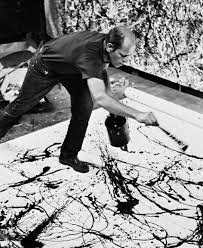

Jackson Pollock's Biography

- Jackson Pollock was born on January 28th, 1912 and died on August 11th, 1956.
- Pollock was well known for his abstract expression, modernism, and action paintings.
- He used a drip technique to create his abstract work.
Pollock's Paintings
| Name of Work |
Year |
| Moon Woman |
1942 |
| Mural |
1943 |
| Convergence |
1952 |
| The Deep |
1953 |